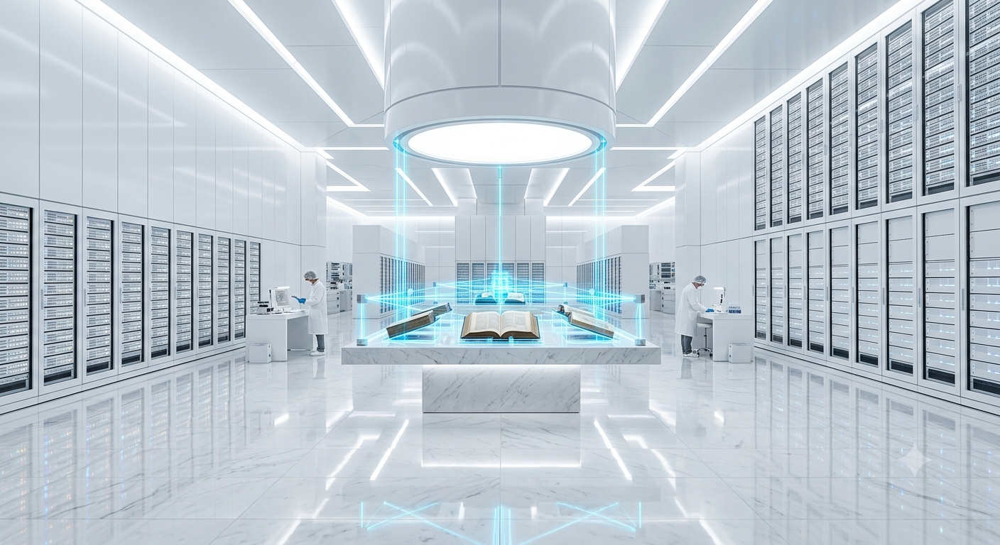

The SynCorp Bleaching Terminal
Part 2: The Dangerous Mission
The maintenance ventilation shafts were tight, hot, and filled with the loud hum of giant air fans. Silas led the way, his heavy mechanical right hand cutting through old plastic grates with its sharp brass fingers. After twenty minutes of crawling, they reached a wide grate looking down into Sector 1. They were standing above the SynCorp Bleaching Terminal.
Silas pushed the grate open, and they dropped quietly onto the floor. The contrast was shocking. The library was a dark cathedral of stone and old paper; this laboratory was a blinding, clinical nightmare. Everything was perfectly, aggressively white. In the center of the large room sat the De-Inker matrix—a massive machine where books moved on conveyors under high-intensity ultraviolet laser grids.
"The main control terminal is over there," Lyra whispered, pointing to a glass desk surrounded by glowing holographic screens. "If I can connect my mobile deck to that console, I can inject the formula of the Living Ink into the central chemical sprayers."
Director Elena Vance-Vane
Subject ID: #01-DIRECTOR
Suddenly, the blue lights on the server racks turned completely off. A single figure walked into the white room, flanked by four large, armored corporate security guards. It was Director Elena Vance-Vane. Sharp, elegant, and completely cold. Her platinum-white geometric hair was perfect. Her synthetic onyx eyes were totally black, reflecting nothing.
"Did you really think the central system wouldn't notice a diagnostic bypass in the library ventilation?" Elena said. Her voice was incredibly quiet, soft, and calm, but it filled the room with a terrifying weight.
Elena’s black onyx eyes turned directly to Silas. She listened carefully for a moment, her head tilted to the side. "That sound," Elena whispered softly, a tiny, cold smile appearing on her lips. "I haven't heard that sound in thirty years."
Silas looked down at his hand. He was still holding the ticking silver pocket watch. "This watch represents a world before your corporation started lying to everyone, Elena."
"No, Silas," Elena said, taking a slow step forward. "That watch does not belong to the past. It belonged to me. Thirty years ago, I sat at that exact same wooden desk in the dark library. I was an archivist. I loved the smell of old paper. I spent three years writing a secret book about the first Martian rebellion. That silver watch was on my wrist every single night."
Silas stared at the watch in his hand, feeling a deep wave of betrayal. "If you remember what it feels like to love history, Elena... why are you doing this?"
"Because history makes people sad, Silas," Elena said, her voice turning cold again. "When people remember what they lost, they rebel. They fight. When they forget, they work. They are safe. They are happy in their ignorance."
"We won't let you!" Lyra screamed. She jumped toward the central console, raising the glass vial to smash it over the main chemical intake valve.
Elena did not panic. She simply raised her right hand, holding a sleek, obsidian laser stylus. She pressed the button once. *Zap.* The red beam hit the glass cylinder in Lyra's hand with perfect precision. The glass shattered instantly. The thick, glowing blue Living Ink exploded into the air, splashing across the pristine white marble floor like glowing blue blood on a field of snow.
"Arrest the girl," Elena commanded quietly. "Take her to the neural cleansing rooms. Reset her mind to zero."
As the guards dragged Lyra away, she looked at Silas. "Silas! Run! The bag! You still have the last book! Run to the surface!"
A guard moved toward Silas, raising his shock-rifle. Silas looked at Elena. For a split second, she looked at the ticking silver watch in his hand, and she hesitated. She did not order the guards to shoot. Silas didn't waste the second. He activated the manual override on the emergency pressure door with his strong mechanical brass hand, and threw his body through the opening into the airlock.